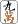
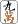

牌の図柄は34種。
                  
               
 や や あるいは あるいは などが手牌に１枚しかなければどっちが上になっていても構わない。しかし手牌に複数枚ある場合、どっちかに揃っていないとなんとなく落ち着かない。万子にいたっては上下が逆さまになっていると、ちと分かりにくい。そこで上下がある牌は、どうしても上下をそろえる。しかし次の１４種は上下シンメトリーなので、いちいち揃える必要がない。 などが手牌に１枚しかなければどっちが上になっていても構わない。しかし手牌に複数枚ある場合、どっちかに揃っていないとなんとなく落ち着かない。万子にいたっては上下が逆さまになっていると、ちと分かりにくい。そこで上下がある牌は、どうしても上下をそろえる。しかし次の１４種は上下シンメトリーなので、いちいち揃える必要がない。
＃現在の日本索子は、よ〜く見ると微妙な上下がある。もちろん無視(笑)
そこで作家の故・五味家康祐氏が名著「五味麻雀教室」の中で、これを「触る必要がない（上下を直す必要がない）」という意味で「触らずの14枚」と呼んだ（正確には14種56枚）。そして、「相手が手牌の上下を直している牌は万子とか字牌。それを読み切って、相手の手を推理する」と説いた。衝撃的な論説だったので、「触らずの14枚」はいちやく有名になった。
正直言って、そういう推理がどれだけ役に立つか分からない。少なくともσ(-_-)レベルでは、何牌の上下を揃えているのか皆目見当も付かない(>_<)
いずれにしても一般のプレーヤーは相手に見破られようがどうしようが、自分のわかりやすさを考えて上下を揃える。しかし非対称牌は、136枚のうち80枚。とうぜん配牌から始まって、ゲーム中でも揃え作業がしょっちゅう発生する。
そこでむかし、この無駄な作業をしなくて済むように、すべて上下対象のデザインを考えた。その基本コンセプトを某デザイン学校の先生に話し、ＣＧで作ってもらった。さすがにプロフェッショナル、グッドデザインであったが、細かい点でσ(-_-)の思いと異なるところもあった。そんな細かい点を切り貼りで直して作ったのがコレ。これを触らずの136枚と称する。(^-^；
三元牌は文字を無くして色だけ。白はともかく、緑發や紅中じゃなくなるが、別に呼称はいままで通りでかまわない。
風牌は元の雰囲気を残しながら上下対称形に。風牌をもっとシンプルにするためにアルファベットの頭文字（ESWN）にしてしまうのも手。しかしオリジナルの雰囲気もいいじゃないかということで、このデザインとしてみた。三元牌は と同じに、牌面をすべて緑 または赤一色にしてもいいが。 と同じに、牌面をすべて緑 または赤一色にしてもいいが。
筒子は 以外は、ほぼ元のデザイン。 はもともと対称形なのでデザイン変更の必要はないが、ほかの８のデザインと共通化してみた。 はもともと対称形なのでデザイン変更の必要はないが、ほかの８のデザインと共通化してみた。
索子は 以外はいままでの形でかまわないが、笹の葉型にしたのは軽いイメージチェンジ。（^-^； 以外はいままでの形でかまわないが、笹の葉型にしたのは軽いイメージチェンジ。（^-^；
万子はとうぜん全面的に変更。対称形となればダイヤか星であるが、星子（シンツ）として★型を選択。
そこで正式には一星(イーシン)、二星（アルシンorリャンシン）、三星（サンシン）....ということになるが、愛称は一星(イースター)、二星（アルスター）、三星（サンスター）、四星（シスター）、五星（ウスター）、六星（ロブスター）、七星（チンスター）、八星（パスタ）、九星（クスター）(^-^)
|